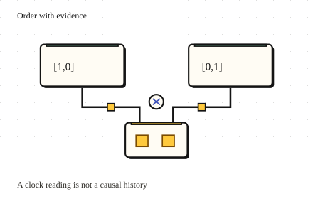

Go deeper · 7 minutes
Ordering and time
A timestamp can sort events without proving which event caused another.
Open this lesson
The older edit wins
A laptop clock is five minutes fast. It edits a title, then a phone edits the same title after receiving that change. A last-write-wins rule using device time can keep the laptop's older title. The timestamps look precise, but they do not prove the order people acted in. Clock sync reduces error; it does not remove uncertainty or pauses.
Order only what you know
Make edits with two drifting clocks. Receive the laptop history before a phone edit to create a causal dependency. Compare timestamp selection with vector-clock conflict detection.
Worked example: concurrent edits
Increment both devices, merge by component maximum, then merge again. Counter state can converge without treating repeated snapshots as new increments. Arbitrary text still needs a conflict policy.
Convergence is not every invariant
Convergence does not guarantee that the merged result preserves a business invariant. Concurrent adds, removes and text edits need deliberate rules and enough history to explain conflicts. A stock decrement may require coordination or preallocated rights. Prefer per-key order for dependent commands; independent counters or different users often need less coordination. If a requirement says newest, ask newest by whose observation.
Pick the invariant before the merge rule
- Independent counters: Merge per-participant maxima without adding a repeated state twice.
- Concurrent text edits: Keep operation identities and a deliberate conflict policy.
- One remaining seat: Coordinate or allocate rights before accepting competing decrements.
Key numbers
- Clock error
- ≈ 300 seconds. A five-minute fast device can beat later wall-clock writes
- Vector payload
- ≈ 800 bytes. 100 participants × 8-byte counters, before identities
- Merged counter
- 7. max([4,0],[0,3]) = [4,3], then sum
Check your reasoning
Think through these questions before opening the lesson. In the game you can test the idea and compare your reasoning.
- Lamport(A) is smaller than Lamport(B). What can the counters alone establish?
- Why not use last-write-wins for notes? Follow-up: users rarely edit at the same time.
- Vectors [3,1] and [2,2] describe edits to one field. How should a causal merge classify them?
- Do we need one global event order? Follow-up: payments and click counters share the stream.
- Two disconnected sellers share a convergent sold-ticket counter but have no allocated rights. What prevents overselling?
The key point
Use clocks to express what is known, and choose an explicit policy for concurrent work.
Practise this idea
- Hard
Scheduled job service
Customers register jobs: "call my web address every night at 02:00" or "every hour on the hour". Aim to fire within 5 seconds; work still waiting after 60 seconds counts as failed. Retry safely after a crash. One external effect requires the customer endpoint to honor a stable job occurrence key. Half the world picks the top of the hour, so a huge crowd of jobs comes due in the same second.
- Medium
One-to-one chat
People send short messages to each other from their phones. A message must arrive once, in order, even when the phone is on a bad connection and sends it again. If the other person is offline, the message waits and a notification goes out.
- Hard
Health readings from a wearable
A wearable records health readings even when its phone or cloud service is unavailable. Keep raw readings on the device when possible and upload only consented summaries in sparse batches. The system must not lose locally saved readings during a supported outage, and deleting an account must have a verifiable end-to-end workflow.
- Medium
Factory sensors
A factory has thousands of machines, each sending readings many times a second. Engineers open charts of the last hour and last month, and an alarm must fire within seconds when a reading goes out of range. The data grows without end.